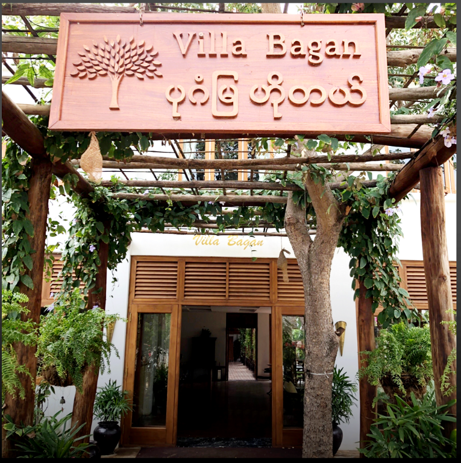
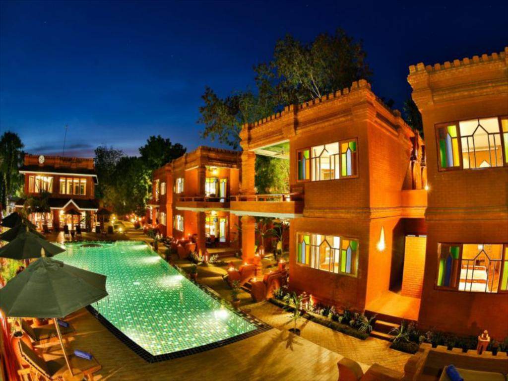
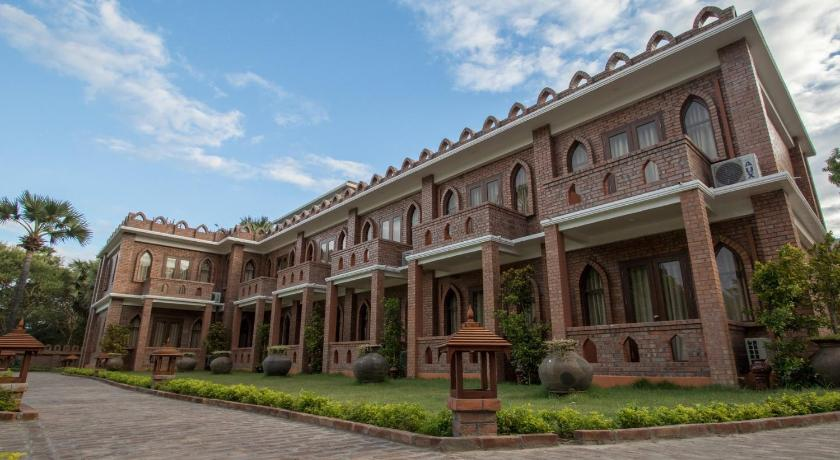
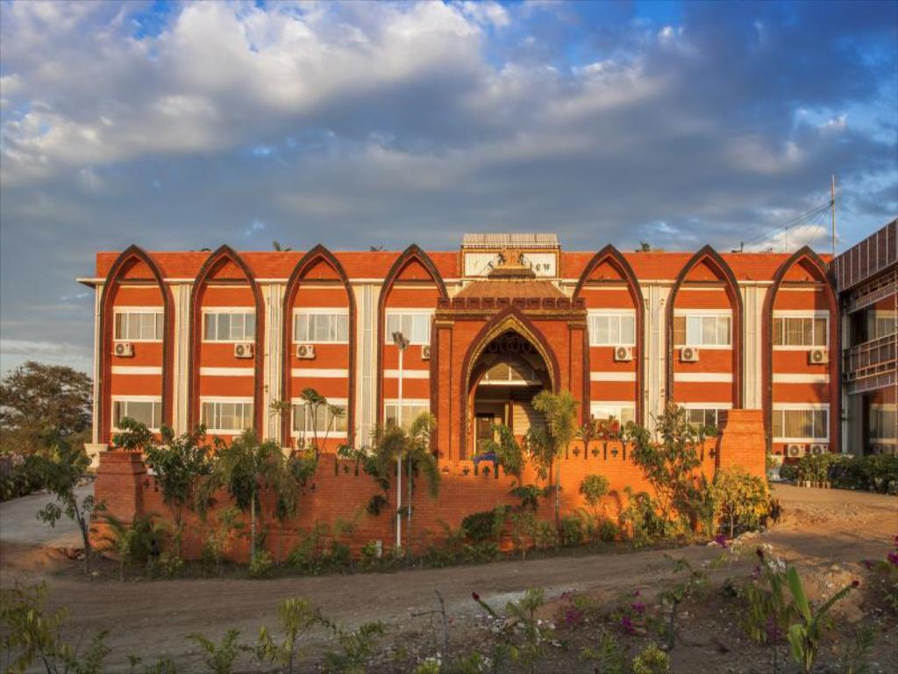

 Villa Bagan သည် New Bagan တွင်တည်ရှိပြီး၊ ပုဂံနှင့်၎င်း၏ပတ်ဝန်းကျင်ကိုတွေ့ကြုံခံစားရန်အကောင်းဆုံးနေရာဖြစ်သည်။ ဤအရပ်တွင် ဧည့်သည်များသည် မြို့၏ အလှများကို ကြည့်ရှု့ခံစားနိုင်သည်။ ၎င်း၏အဆင်ပြေသောတည်နေရာနှင့်အတူ မြို့ရဲ့မဖြစ်မနေသွားရောက်သင့်သည့်နေရာများကို လွယ်ကူစွာသွားရောက်နိုင်သည်။ Villa Bagan သည် ပုဂံ၌သင်၏နေထိုင်မှုကိုပိုမိုကောင်းမွန်စေရန်အတွက် ၀န်ဆောင်မှုများစွာကိုပေးအပ်ထားသည်။အခန်းအားလုံးတွင်အခမဲ့ Wi-Fi၊ ၂၄ နာရီလုံခြုံရေး၊ နေ့စဉ်အိမ်မှုစောင့်ရှောက်မှုနှင့် သက်တောင့်သက်သာဖြစ်စေရန်အတွက်ခရီးဆောင်အိတ်များသိုလှောင်ထားပေးသည်။ Villa Bagan ၏ ဧည့်ကြိုခန်းများသည် ကောင်းမွန်သောပရိဘောဂများတပ်ဆင်ထားပြီး အထူးဝင်ပေါက်၊ အခမဲ့သောက်ရေ၊ လေအေးပေးစက်ကဲ့သို့သော အရာမျာကို၀န်ဆောင်မှုပေးထားသည်။ Villa Bagan သည် ပုဂံတွင်နေထိုင်စဥ်အတွင်းသက်တောင့်သက်သာရှိမှုကိုရှာဖွေလိုသူများအတွက်နေထိုင်ရန်အကောင်းဆုံးနေရာတစ်ခုဖြစ်သည်။
- အမျိုးအစား - ကြယ် ၃ ပွင့် အဆင့်ဟိုတယ်
- လိပ်စာ - အမှတ် (၉)၊ ခွာညိုလမ်း၊ ကျန်စစ်သားရပ်ကွက်၊ ပုဂံမြို့သစ်၊ မန္တလေးတိုင်း။
 စီးပွားရေးနှင့်အပန်းဖြေခရီးသွားများအတွက်ရည်ရွယ်ထာသော Ananta Bagan ဟိုတယ်သည် ညောင်ဦးမြို့၏အကောင်းဆုံးနေရာတွင်တည်ရှိသည်။ မြို့မှ ၇.၂ ကီလိုမီတာအကွာတွင်တည်သော ဤကြယ်၄ပွင့်ဟိုတယ်သည် အကောင်းဆုံးနေရာတွင်တည်ရှိပြီး အကောင်းဆုံး၀န်ဆောင်မှုများကိုရရှိစေသည်။ ၎င်း၏အဆင်ပြေသောတည်နေရာနှင့်အတူ မြို့၏အထင်ကရနေရာများသို့အလွယ်တကူသွားရောက်နိုင်သည်။ Ananta Bagan Hotel မှ ၀န်ဆောင်မှုများသည် ဧည့်သည်များအတွက်သာယာသောနေထိုင်မှုဖြစ်စေသည်။ အခန်းအားလုံးတွင် အခမဲ့၀ိုင်ဖိုင်၊ လက်မှတ်၀န်ဆောင်မှု၊ ၂၄နာရီ မှာယူနိုင်မှု၊ ခရီးဆောင်အိတ်သိုလှောင်ခြင်း စသည့်ထိပ်တန်းအဆင့်ရှိ ၀န်ဆောင်မှုများကို ဤဟိုတယ်တွင်ခံစားနိုင်သည်။ ထို့အပြင် ဧည့်သည်များသက်တောင့်သက်သာဖြစ်စေရန်အတွက် အခန်းများတွင်တီဗွီ LCD/Plasma ဖန်သားပြင်၊ ကြိုးမဲ့အင်တာနက် (အခမဲ့)၊ လေအေးပေးစက်များ၊ ဟိုတယ်ပြင်ပရေကူးကန်၊ ရေပူစမ်း၊ အနှိပ်ခံခြင်း စသည့် သင်၏လည်ပတ်မှုရည်ရွယ်ချက်မည်သို့ပင်ရှိပါစေ၊ Ananta Bagan Hotel သည်ပုဂံ၌သင်နေထိုင်ရန်အကောင်းဆုံးရွေးချယ်မှုကိုပြုလုပ်နိုင်သည်။
- အမျိုးအစား - ကြယ် ၄ ပွင့် အဆင့်ဟိုတယ်
- လိပ်စာ - ၀က်ကြီးအင်း၊ ညောင်ဦးမြို့၊ မန္တလေးတိုင်း။
 ရွှေလိပ်တူးစေတီမှ ၉မိနစ်ကြာလမ်းလျှောက်နိုင်သည့် Bagan Billiken Hotel ၌စားသောက်ဆိုင်၊ အခမဲ့ကားရပ်နားရန်နေရာနှင့် ဥယျာဉ်များရှိသည်။ ဤကြယ်သုံးပွင့်ဟိုတယ်တွင် ATM နှင့် concierge service များရရှိနိုင်သည်။ ဟိုတယ်တွင် ၂၄ နာရီ၀န်ဆောင်မှု၊ လေဆိပ်သယ်ယူပို့ဆောင်ရေး၊ အခန်း၀န်ဆောင်မှုနှင့် အခမဲ့ WiFi တို့ပါ၀င်သည်။ အခန်းအားလုံးတွင်လေအေးပေးစက်များ၊ ဂြိုလ်တုလိုင်းများတပ်ဆင်ထားသော ရုပ်မြင်သံကြားစက်များ၊ လျှပ်စစ်ရေနွေးအိုး၊ ရေပူကန်၊ အခြောက်ခံစက်နှင့် စားပွဲတစ်ခုတို့ပါရှိသည်။ အခန်းများတွင် လက်ဆေးကန်နှင့် အခမဲ့အိမ်သာသုံးပစ္စည်းများပါ၀င်သည့်သီးသန့်ရေချိုးခန်းပါရှိသည်။ ဟိုတယ်တွင်နားနေရန်နေရာအချို့လည်းရှိသည်။ Bagan Billiken Hotel ရှိ ဧည့်သည်များသည် နံနက်စာကိုအခမဲ့သုံးဆောင်နိုင်သည်။ အလွယ်တကူသွားရောက်နိုင်သောဘုရားများမှာ အလိုတော်ပြည့်ဘုရား၊ ထီးလိုမင်းလိုဘုရားနှင့် ရွှေစည်းခုံဘုရားများဖြစ်သည်။ အနီးဆုံးလေဆိပ်သည် ဟိုတယ်နှင့် ၃.၇ မိုင်အကွာတွင်ရှိသော ညောင်ဦးလေဆိပ်ဖြစ်သည်။
- အမျိုးအစား - ကြယ် ၃ ပွင့် အဆင့်ဟိုတယ်
- လိပ်စာ - လမ်းဟောင်း၊ ညောင်ဦးမြို့၊ မန္တလေးတိုင်း။

ပုဂံ၏ အဆင်ပြေဆုံးနေရာတွင် တည်ရှိသော Bagan View Hotel သည် မြို့တော်ကိုစူးစမ်းရန်အတွက်အလွန်ကောင်းသောအခြေစိုက်စခန်းဖြစ်သည်။ ၎င်း၏အဆင်ပြေသောတည်နေရာနှင့်အတူ ဧည့်သည်များသည် မြို့၏ မဖြစ်မနေသွားလည်သင့်သောနေရာများအား အလွယ်တကူသွားရောက်နိုင်သည်။ Bagan View Hotel သည် ဧည့်သည်များကိုသာလွန်ကောင်းမွန်သောဝန်ဆောင်မှုများနှင့် ကျယ်ပြန့်သောအခန်းများဖြင့် သင်၏နေထိုင်ခြင်းကိုတတ်နိုင်သမျှသက်တောင့်သက်သာဖြစ်စေရန်ရည်ရွယ်ထားသည်။ ဧည့်သည်များသည် အခန်းပေါင်း ၄၃ ခန်းမှ မိမိကြိုက်နှစ်သက်ရာအခန်းကိုရွေးချယ်၍ ငြိမ်းချမ်းမှုနှင့်သဟဇာတဖြစ်မှုကိုခံစားနိုင်သည်။ Bagan View ဟိုတယ်၀န်ဆောင်မှုများကိုခံစားကြည့်ပါ။
- အမျိုးအစား - ကြယ် ၂ ပွင့် အဆင့်ဟိုတယ်
- လိပ်စာ - အမှတ် (၁၂)၊ စံပယ်လမ်း၊ ပုဂံမြို့သစ်၊ မန္တလေးတိုင်း။
 ပုဂံညောင်ဦးမြို့တွင်တည်ရှိသော Sky View ဟိုတယ်သည် ခရီးသွားများအတွက်ရေပန်းစားသောရွေးချယ်မှုတစ်ခုဖြစ်သည်။ မြို့လယ်ခေါင်မှ ၂.၀ ကီလိုမီတာအကွာတွင်သာဟိုတယ်၏မဟာဗျူဟာကျသောတည်နေရာသည် ဒေသဆိုင်ရာစိတ်ဝင်စားဖွယ်နေရာများစွာသို့ ဧည့်သည်များအနေဖြင့်အလွယ်တကူအလွယ်တကူရောက်ရှိနိုင်ရန်သေချာစေသည်။ Sky View ဟိုတယ်သည်ခရီးသွားများအတွက် ပြီးပြည့်စုံသော၀န်ဆောင်မှုနှင့် မရှိမဖြစ်လိုအပ်သောအရာများအားလုံးကိုပေးစွမ်းနိုင်သည်။ ဧည့်သည်များ၏ နေထိုင်မှုအဆင်ပြေစေရန်အတွက် အခန်းအားလုံးတွင်အခမဲ့ Wi-Fi ကိုတပ်ဆင်ပေးထားသည်၊ ၂၄ နာရီ၀န်ဆောင်မှု၊ ခရီးဆောင်အိတ်များထားရန်နေရာ နှင့် ကားရပ်နားရန်နေရာများရှိသည်။ Sky View Hotel တွင်အိပ်ခန်း ၃၈ ခန်းရှိသည်။ အခန်းအားလုံးတွင် ရုပ်မြင်သံကြားစက် LCD / Plasma ဖန်သားပြင်၊ အဝတ်အစားများ၊ လက်ဖက်ရည် စသည်တို့ပါ၀င်သည်။ သင်သည် ဟိုတယ်၏ဥယျာဉ်၌ ပတ်ဝန်းကျင်၏အလှကိုခံစားနိုင်သည်။ ပုဂံကိုလာရောက်လည်ပတ်ရသည့်အကြောင်းရင်းမည်သို့ပင်ဖြစ်ပါစေ Sky View Hotel သည်အနားယူရန်အတွက်အကောင်းဆုံးနေရာဖြစ်သည်။
- အမျိုးအစား - ကြယ် ၂ ပွင့် အဆင့်ဟိုတယ်
- လိပ်စာ - အမှတ် (၆၉)၊ ရွှေကံ့ကော်လမ်း၊ ဇေယျ၀တီရပ်ကွက်၊ ညောင်ဦးမြို့၊ မန္တလေးတိုင်း။